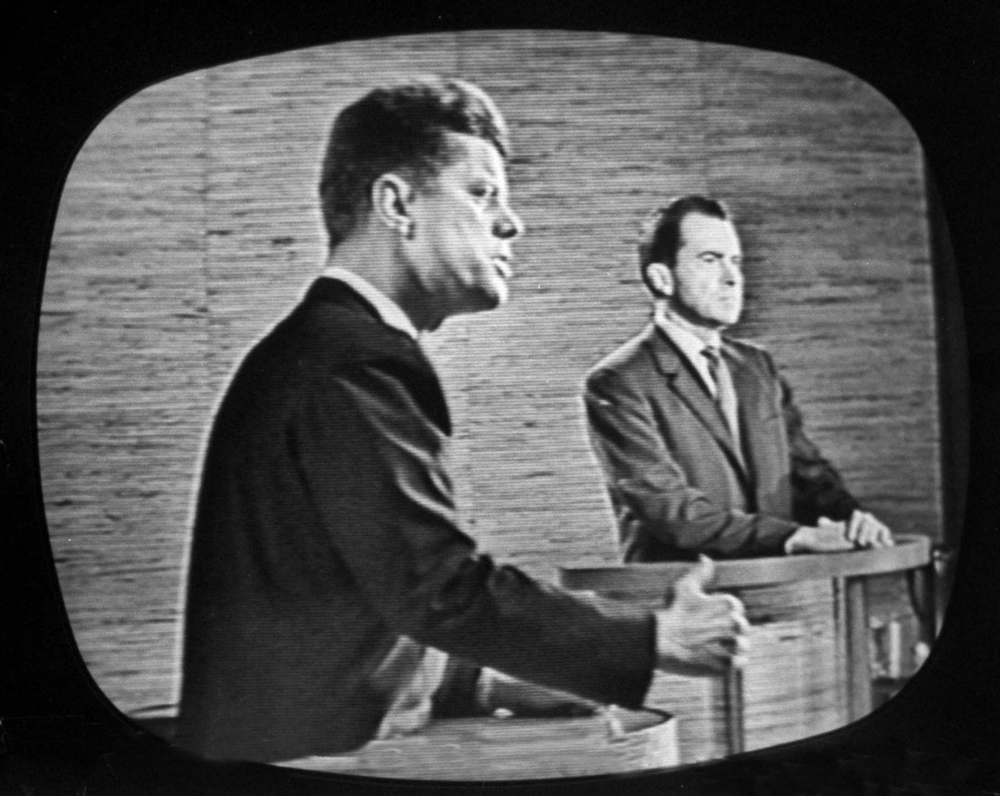
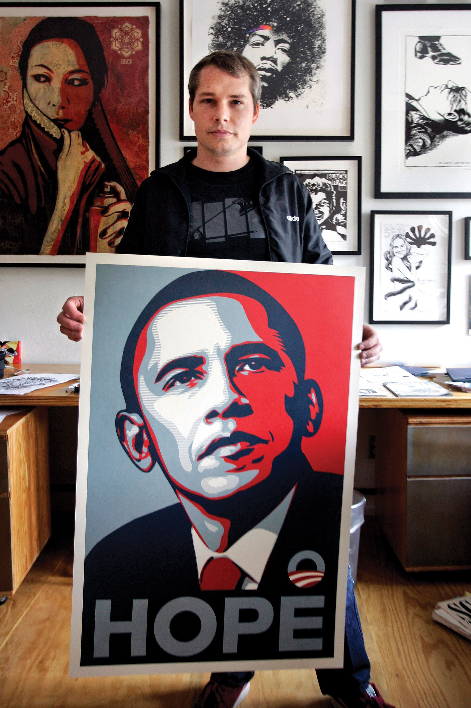
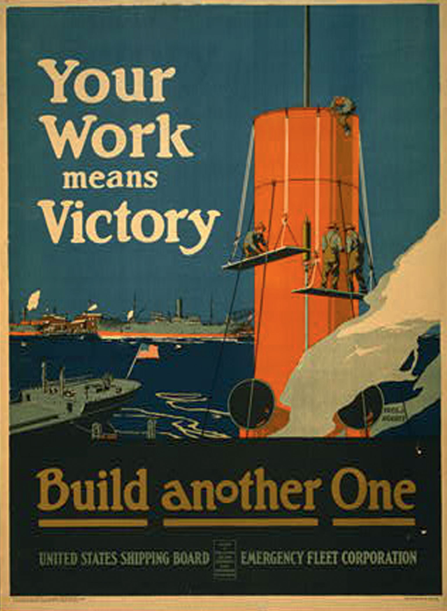

Figure 1.1

A New York City woman lost her cell phone in the back of a taxi cab. Sasha Gomez, 16, of Queens, ended up with the phone. She decided to keep it and use it. She did not realize the consequences. She was humiliated, harassed, and arrested. And she became the subject of a public shaming ritual only possible by today’s media in today’s culture.
The phone was an expensive model, a T-Mobile Sidekick that sold for $350. Sasha began using the phone to take photographs and send instant messages to friends and family. The woman who lost the phone thought she would never see the phone again. She bought another Sidekick, logged onto her account and found that the old phone was being used. She saw photographs and messages by Sasha. The woman wanted her old phone back. She had a media-savvy friend, Evan Guttman. Evan was able to track down Sasha by her instant messages. He contacted Sasha and asked her to return the phone to his friend. “Basically, she told me to get lost,” Evan later told The New York Times.Nicholas Confessore, “Tale of a Lost Cellphone, and Untold Static,” The New York Times, June 21, 2006. Web. http://www.nytimes.com/2006/06/21/nyregion/21sidekick.html?_r=1&scp=1&sq=evan+guttman&st=nyt
Evan decided to fight for his friend’s phone—through the media. He put up a web page that told the story of the lost cell phone. He put up the pictures of Sasha and her family. The story spread. Evan began getting dozens and then hundreds of sympathetic emails from other people who had lost phones and understood his frustration with Sasha. Two technology blogs, Diggs and Gizmodo, linked to the story and web page. Evan then got thousands of emails, some from as far off as Africa and Asia. Lawyers and police officers contacted Evan about property law and told him how to approach the police. Some people went further than writing supportive emails. They found Sasha’s MySpace page. They sent Sasha and her friends messages demanding the return of the phone. Other people learned her home address in Queens, drove by her apartment building and shouted “thief.”
Sasha and her family were outraged and alarmed. They contacted Evan. Sasha still refused to return the phone. Her brother too communicated with Evan. He said he was a military policeman, and he warned Evan to leave Sasha alone. Evan posted those comments online. He soon heard from others in the military. They told him that the brother’s threats were a violation of military policy. They said they would report the threats to the brother’s superiors.
Armed with all this information, Evan contacted Sasha one more time. He said he and his friend would next go the police. Evan said he was threatened again. He and his friend went to the police who then arrested Sasha. The charge was possession of stolen property. Sasha’s mother came forward and said she had bought the phone for $50 on a subway platform and given it to Sasha. Police confiscated the phone for the original owner. And Evan became a minor cultural celebrity. The story appeared in The New York Times and the International Herald Tribune and was broadcast on MSNBC and other outlets. It was a modern morality tale caused by, and then made possible by, the intersection of media technology and culture.
I thought the story of the lost cell phone would be a great introduction for a text on understanding media and culture and used The New York Times story to write the previous paragraphs. Long after, when I showed the introduction to a colleague, he looked at me and said, “Are you kidding?” He showed me a then-recent book by media scholar Clay Shirky, Here Comes Everybody, a book on the power of organizing through new media. Shirky begins his book—with the same story of the lost cell phone. With some wry amusement over fate, I decided that I would keep my introduction as well. In some ways, the movement of the lost cell phone story from Evan’s website through The New York Times through MSNBC through Clay Shirky’s text through my book on understanding media and culture is symbolic, as we will see, of the multitude of flows between media and culture.
This book’s title tells its intent. It is written to help you understand media and culture. The media and culture are so much a part of our days that sometimes it is difficult to step back and appreciate and apprehend their great impact on our lives.
The book’s title, and the book itself, begin with a focus squarely on media. Think of your typical day. If you are like many people, you wake to a digital alarm clock or perhaps your cell phone. Soon after waking, you likely have a routine that involves some media. Some people immediately check the cell phone for text messages. Others will turn on the computer and check Facebook, email, or websites. Some people read the newspaper. Others listen to music on an iPod or CD. Some people will turn on the television and watch a weather channel, cable news, or Sports Center. Heading to work or class, you may chat on a cell phone or listen to music. Your classes likely employ various types of media from course management software to PowerPoint presentations to DVDs to YouTube. You may return home and relax with video games, television, movies, more Facebook, or music. You connect with friends on campus and beyond with text messages or Facebook. And your day may end as you fall asleep to digital music. Media for most of us are entwined with almost every aspect of life and work. Understanding media will not only help you appreciate the role of media in your life but also help you be a more informed citizen, a more savvy consumer, and a more successful worker. Media influence all those aspects of life as well.
The book’s title also has links to a highly influential book in media studies, Understanding Media, by the social theorist and critic, Marshall McLuhan.Marshall McLuhan, Understanding Media: The Extensions of Man. New York: McGraw Hill, 1964. In the midst of the 20th century and the rise of television as a mass medium, McLuhan foresaw how profoundly media would shape human lives. His work on media spanned four decades, from the 1950s to his death in 1980. In the 1960s and 1970s, during the height of television’s popularity and the emergence of computers, he became an international celebrity. He appeared on magazine covers and television talk shows. He had a cameo appearance in the Woody Allen film, Annie Hall. Wired magazine listed him on its masthead as “patron saint.” In universities, however, McLuhan was often dismissed, perhaps because of his celebrity, his outlandish style, and his broad and sweeping declarations. Yet as media continued to develop in ways anticipated by his writings, McLuhan again found an audience in media studies.
In Understanding Media, McLuhan offered some provocative thoughts. He said that the media themselves were far more important than any content they carried. Indeed, he said, each medium, such as print or broadcast, physically affects the human central nervous system in a certain way. Media influence the way the brain works and how it processes information. They create new patterns of thought and behavior. Looking back over time, McLuhan found that people and societies were shaped by the dominant media of their time. For example, McLuhan argued, people and societies of the printing press era were shaped by that medium. And, he said, people and societies were being shaped in new ways by electronic media. Summing up, in one of his well-known phrases, he said, “The medium is the message.”
This book’s title uses McLuhan’s title—and adds culture. McLuhan well understood how media shape culture. However, one weakness in McLuhan’s work, especially his early work, is that he did not fully account for how culture shapes media. Culture can be a vague and empty term. Sometimes culture is defined in a very narrow sense as “the arts” or some sort of fashionable refinement. Another definition of culture is much more expansive, however. In this broader sense, culture is a particular way of life and how that life is acted out each day in works, practices, and activities. Thus, we can talk about Italian culture, Javanese culture, or the culture of the ancient Greeks. Another communication theorist, James Carey, elegantly captures this expansive view of culture. In “A Cultural Approach to Communication,” Carey wrote the following:
“We create, express, and convey our knowledge of and attitudes toward reality through the construction of a variety of symbol systems: art, science, journalism, religion, common sense, mythology. How do we do this? What are the differences between these forms? What are the historical and comparative variations in them? How do changes in communication technology influence what we can concretely create and apprehend? How do groups in society struggle over the definition of what is real?”James Carey, “A Cultural Approach to Communication,” in Communication as Culture: Essays on Media and Society. 2nd ed. New York: Taylor & Francis, 2006, p. 24.
That large sense of culture will be used in this book. The chapters to come will provide an in-depth look at the relationship of media and culture. We will look at many kinds of media and how those media shape and are shaped by culture. Media and culture shape each other around the globe, of course. The focus in this book primarily will be on the United States. This focus is not because U.S. media have such global reach but because understanding media and culture in one setting will allow you to think about media and culture in other settings. This intellectual journey should be interesting and fun. You live, study, work, and play with media in culture. By the book’s end, you should have a much deeper appreciation and understanding of them.
We use all kinds of terms to talk about media. It will be useful to clarify them. It will be especially important to distinguish between mass communication and mass media, and to attempt a working definition of culture. You likely are reading this book as part of a class dedicated to mass communication, so let’s start with mass communication first. Note that adjective: mass. Here is a horrible definition of mass from an online dictionary: Of, relating to, characteristic of, directed at, or attended by a large number of people. But the definition gets the point across. Communication can take place just between two people, or among a few people, or maybe even within one person who is talking to himself. Mass communication is communication of, relating to, characteristic of, directed at, or attended by a large number of people. That’s pretty ugly. Let’s try the following: Mass communicationCommunication transmitted to large segments of the population. refers to communication transmitted to large segments of the population.
How does that happen? The transmission of mass communication happens using one or more of many different kinds of mediaMeans of communication and transmission; as the plural of medium, a means of communication and transmission, media refers to a number of such means, such as print, digital, and electronic media. (people sometimes forget that media is the plural of the singular, medium). A medium is simply an instrument or means of transmission. It can be two tin cans connected by a string. It can be television. It can be the Internet. A mass medium is a means of transmission designed to reach a wide audience. It is not tin cans on a string, unless you have a lot of cans, but it can be television or the Internet. Media are more than one medium. So mass mediaThose means of transmission that are designed to reach a wide audience; some examples are radio, newspapers, magazines, books, and video games, as well as Internet media such as blogs, podcasts, and video sharing. refers to those means of transmission that are designed to reach a wide audience. Mass media are commonly considered to include radio, film, newspapers, magazines, books, and video games, as well as Internet blogs, podcasts, and video sharing.
Lastly, let’s define culture a bit more. All this mass communication over mass media takes place among people in a particular time and place. Those people share ideas about reality and the world and themselves. They act out those ideas daily in their lives, work, and creative expressions, and they do so in ways that are different from other people in other places and other times. We can use culture to refer to the acting out of these shared ideas.
One of the great scholars of culture, anthropologist Clifford Geertz, offered this definition. He said, culture is “an historically transmitted pattern of meanings embodied in symbols, a system of inherited conceptions expressed in symbolic forms by means of which men communicate, perpetuate, and develop their knowledge about and their attitudes toward life” (1973, 89). That’s difficult language, but you can get the idea—culture is historically transmitted knowledge and attitudes toward life expressed in symbolic form. Or perhaps more simply, cultureThe expressed and shared values, attitudes, beliefs, and practices of a social group, organization, or institution. is the expressed and shared values, attitudes, beliefs, and practices of a social group, organization, or institution. It is OK if that still seems broad and fluid. Scholars too wrestle with the term because it must capture so much. Culture should not be easy to define.
What this book will do is bring together media and culture in the context of the American experience. Throughout American history, evolving media technologies have changed the way we relate socially, economically, and politically. Here’s one example from long ago that is still talked about today. In 1960, the first televised presidential debates changed American history forever. The young senator, John F. Kennedy, looked wonderful on television. He appeared energetic, crisp and at ease, while Vice President Richard Nixon looked nervous and uncomfortable. His makeup was caked on. He hunched and slouched. People who listened to the debate on the radio considered it a tie. But most people who watched the debate on television believed that Kennedy crushed Nixon. Kennedy upset Nixon and won the presidency. A few months later, the newly-elected president gave credit to technology for changing public perceptions and enabling his win. He claimed that “it was TV more than anything else that turned the tide.”Louis Menand, “Masters of the Matrix,” The New Yorker, January 5, 2004. Ever since Kennedy, American presidential hopefuls have had to be increasingly television-ready and media savvy. Indeed, evolving technology has helped change what the American public wants out of its leaders.
Figure 1.2
In today’s wired world of smartphones and streaming satellite feeds, our expectations of our leaders, celebrities, teachers, and even ourselves are changing in drastic ways. This book aims to provide you with the context, tools, and theories to understand changes brought about by the commingling of media and culture. Rather than telling you what to think, this book hopes to provide you with a framework to consider some of the crucial issues affecting media and culture in today’s world. The following are some questions to consider now and to keep in mind as you move forward in this book:
Reread the previous questions about media and culture. Write down some of your initial responses or reactions, based on your prior knowledge or intuition. Keep the piece of paper somewhere secure and return to it on the last day of the course. Were your responses on target? How has your understanding of media and culture changed? How might you answer questions differently now?
“Well, how did I get here?” a baffled David Byrne sings in the Talking Heads song, “Once in a Lifetime.” The contemporary media landscape is so rich, deep, and multifaceted that it’s easy to imagine American media consumers asking themselves the same question. In 2010, Americans could turn on their television and find 24-hour news channels, as well as music videos, nature documentaries, and reality shows about everything from hoarders to fashion models. That’s not to mention movies available on-demand from cable providers, or television and video available online for streaming or downloading. Half of American households receive a daily newspaper, and the average person holds 1.9 magazine subscriptions.Journalism.org, The State of the News Media 2004, http://www.stateofthemedia.org/2004/ (accessed July 15, 2010); Jim Bilton, “The Loyalty Challenge: How Magazine Subscriptions Work,” In Circulation, January/February 2007. A University of California San Diego study claimed that U.S. households consumed around 3.6 zettabytes of information in 2008, the digital equivalent of a 7-foot high stack of books covering the entire United States, including Alaska—a 350 percent increase since 1980.Doug Ramsey, “UC San Diego Experts Calculate How Much Information Americans Consume.” University of San Diego News Center, December 9, 2009. Americans are exposed to media in taxicabs and busses, in classrooms and doctors’ offices, on highways and in airplanes.
Later chapters will offer in-depth explorations of how particular media developed in different eras. But we can begin to orient ourselves here by briefly examining a history of media in culture, looking at the ways technological innovations have helped to bring us to where we are today, and finally considering the varied roles the media fill in our culture today.
Until Johannes Gutenberg’s 15th-century invention of the movable type printing press, books were painstakingly handwritten, and no two copies were exactly the same. The printing press made the mass production of print media possible. Not only was it much cheaper to produce written material, but new transportation technologies also made it easier for texts to reach a wide audience. It’s hard to overstate the importance of Gutenberg’s invention, which helped usher in massive cultural movements like the European Renaissance and the Protestant Reformation. In 1810, another German printer, Friedrich Koenig, pushed media production even further when he essentially hooked the steam engine up to a printing press, enabling the industrialization of printed media. In 1800, a hand-operated printing press could produce about 480 pages per hour; Koenig’s machine more than doubled this rate. (By the 1930s, many printing presses had an output of 3000 pages an hour.) This increased efficiency helped lead to the rise of the daily newspaper.
As the first Europeans settled the land that would come to be called the United States of America, the newspaper was an essential medium. At first, newspapers helped the Europeans stay connected with events back home. But as the people developed their own way of life—their own culture—newspapers helped give expression to that culture. Political scientist Benedict Anderson has argued that newspapers also helped forge a sense of national identity by treating readers across the country as part of one unified group with common goals and values. Newspapers, he said, helped create an “imagined community.”
The United States continued to develop, and the newspaper was the perfect medium for the increasingly urbanized Americans of the 19th century, who could no longer get their local news merely through gossip and word of mouth. These Americans were living in an unfamiliar world, and newspapers and other publications helped them negotiate the rapidly changing world. The Industrial Revolution meant that people had more leisure time and more money, and media helped them figure out how to spend both.
In the 1830s, the major daily newspapers faced a new threat with the rise of the penny press—newspapers that were low-priced broadsheets. These papers served as a cheaper, more sensational daily news source and privileged news of murder and adventure over the dry political news of the day. While earlier newspapers catered to a wealthier, more educated audience, the penny press attempted to reach a wide swath of readers through cheap prices and entertaining (often scandalous) stories. The penny press can be seen as the forerunner to today’s gossip-hungry tabloids.
Figure 1.3

The penny press appealed to readers’ desires for lurid tales of murder and scandal.
In the early decades of the 20th century, the first major non-print forms of mass media—film and radio—exploded in popularity. Radios, which were less expensive than telephones and widely available by the 1920s, especially had the unprecedented ability of allowing huge numbers of people to listen to the same event at the same time. In 1924, President Calvin Coolidge’s preelection speech reached more than 20 million people. Radio was a boon for advertisers, who now had access to a large and captive audience. An early advertising consultant claimed that the early days of radio were “a glorious opportunity for the advertising man to spread his sales propaganda” thanks to “a countless audience, sympathetic, pleasure seeking, enthusiastic, curious, interested, approachable in the privacy of their homes.”Asa Briggs and Peter Burke, A Social History of the Media: From Gutenberg to the Internet (Malden, MA: Polity Press, 2005).
The reach of radio also further helped forge an American culture. The medium was able to downplay regional differences and encourage a unified sense of the American lifestyle—a lifestyle that was increasingly driven and defined by consumer purchases. “Americans in the 1920s were the first to wear ready-made, exact-size clothing…to play electric phonographs, to use electric vacuum cleaners, to listen to commercial radio broadcasts, and to drink fresh orange juice year round.”Digital History, “The Formation of Modern American Mass Culture,” The Jazz Age: The American 1920s, 2007, http://www.digitalhistory.uh.edu/database/article_display.cfm?hhid=454 (accessed July 15, 2010). This boom in consumerism put its stamp on the 1920s, and, ironically, helped contribute to the Great Depression of the 1930s.Library of Congress, “Radio: A Consumer Product and a Producer of Consumption,” http://lcweb2.loc.gov:8081/ammem/amrlhtml/inradio.html (accessed July 15, 2010).
The post-World War II era in the United States was marked by prosperity, and by the introduction of a seductive new form of mass communication: television. In 1946, there were about 17,000 televisions in the entire United States. Within seven years, two-thirds of American households owned at least one set. As the United States’ gross national product (GNP) doubled in the 1950s, and again in the 1960s, the American home became firmly ensconced as a consumer unit. Along with a television, the typical U.S. family owned a car and a house in the suburbs, all of which contributed to the nation’s thriving consumer-based economy.
Broadcast television was the dominant form of mass media. There were just three major networks, and they controlled over 90 percent of the news programs, live events, and sitcoms viewed by Americans. On some nights, close to half the nation watched the same show! Some social critics argued that television was fostering a homogenous, conformist culture by reinforcing ideas about what “normal” American life looked like. But television also contributed to the counterculture of the 1960s. The Vietnam War was the nation’s first televised military conflict, and nightly images of war footage and war protestors helped intensify the nation’s internal conflicts.
Broadcast technology, including radio and television, had such a hold of the American imagination that newspapers and other print media found themselves having to adapt to the new media landscape. Print media was more durable and easily archived, and allowed users more flexibility in terms of time—once a person had purchased a magazine, he could read it whenever and wherever he’d like. Broadcast media, in contrast, usually aired programs on a fixed schedule, which allowed it to both provide a sense of immediacy but also impermanence—until the advent of digital video recorders in the 21st century, it was impossible to pause and rewind a television broadcast.
The media world faced drastic changes once again in the 1980s and 1990s with the spread of cable television. During the early decades of television, viewers had a limited number of channels from which to choose. In 1975, the three major networks accounted for 93 percent of all television viewing. By 2004, however, this share had dropped to 28.4 percent of total viewing, thanks to the spread of cable television. Cable providers allowed viewers a wide menu of choices, including channels specifically tailored to people who wanted to watch only golf, weather, classic films, sermons, or videos of sharks. Still, until the mid-1990s, television was dominated by the three large networks. The Telecommunications Act of 1996, an attempt to foster competition by deregulating the industry, actually resulted in many mergers and buyouts of small companies by large companies. The broadcast spectrum in many places was in the hands of a few large corporations. In 2003, the Federal Communications Commission (FCC) loosened regulation even further, allowing a single company to own 45 percent of a single market (up from 25 percent in 1982).
New media technologies both spring from and cause cultural change. For this reason, it can be difficult to neatly sort the evolution of media into clear causes and effects. Did radio fuel the consumerist boom of the 1920s, or did the radio become wildly popular because it appealed to a society that was already exploring consumerist tendencies? Probably a little bit of both. Technological innovations such as the steam engine, electricity, wireless communication, and the Internet have all had lasting and significant effects on American culture. As media historians Asa Briggs and Peter Burke note, every crucial invention came with “a change in historical perspectives.”Asa Briggs and Peter Burke, A Social History of the Media: From Gutenberg to the Internet (Malden, MA: Polity Press, 2005). Electricity altered the way people thought about time, since work and play were no longer dependent on the daily rhythms of sunrise and sunset. Wireless communication collapsed distance. The Internet revolutionized the way we store and retrieve information.
The contemporary media age can trace its origins back to the electrical telegraph, patented in the United States by Samuel Morse in 1837. Thanks to the telegraph, communication was no longer linked to the physical transportation of messages. Suddenly, it didn’t matter whether a message needed to travel five or five hundred miles. Suddenly, information from distant places was nearly as accessible as local news. When the first transatlantic cable was laid in 1858, allowing near-instantaneous communication from the United States to Europe, The London Times described it as “the greatest discovery since that of Columbus, a vast enlargement…given to the sphere of human activity.”Asa Briggs and Peter Burke, A Social History of the Media: From Gutenberg to the Internet (Malden, MA: Polity Press, 2005). Celebrations broke out in New York as people marveled at the new media. Telegraph lines began to stretch across the globe, making their own kind of world wide web.
Not long after the telegraph, wireless communication (which eventually led to the development of radio, television, and other broadcast media) emerged as an extension of telegraph technology. Although many 19th-century inventors, including Nikola Tesla, had a hand in early wireless experiments, it was Italian-born Guglielmo Marconi who is recognized as the developer of the first practical wireless radio system. This mysterious invention, where sounds seemed to magically travel through the air, captured the world’s imagination. Early radio was used for military communication, but soon the technology entered the home. The radio mania that swept the country inspired hundreds of applications for broadcasting licenses, some from newspapers and other news outlets, while other radio station operators included retail stores, schools, and even cities. In the 1920s, large media networks—including the National Broadcasting Company (NBC) and the Columbia Broadcasting System (CBS)—were launched, and they soon began to dominate the airwaves. In 1926, they owned 6.4 percent of U.S. broadcasting stations; by 1931, that number had risen to 30 percent.Asa Briggs and Peter Burke, A Social History of the Media: From Gutenberg to the Internet (Malden, MA: Polity Press, 2005).
The 19th-century development of photographic technologies would lead to the later innovations of cinema and television. As with wireless technology, several inventors independently came up with photography at the same time, among them the French inventors Joseph Niepce and Louis Daguerre, and British scientist William Henry Fox Talbot. In the United States, George Eastman developed the Kodak camera in 1888, banking on the hope that Americans would welcome an inexpensive, easy-to-use camera into their homes, as they had with the radio and telephone. Moving pictures were first seen around the turn of the century, with the first U.S. projection hall opening in Pittsburgh in 1905. By the 1920s, Hollywood had already created its first stars, most notably Charlie Chaplin. By the end of the 1930s, Americans were watching color films with full sound, including Gone with the Wind and The Wizard of Oz.
Television, which consists of an image being converted to electrical impulses, transmitted through wires or radio waves, and then reconverted into images, existed before World War II but really began to take off in the 1950s. In 1947, there were 178,000 television sets made in the United States; five years later, there were 15 million. Radio, cinema, and live theater all saw a decline in the face of this new medium that allowed viewers to be entertained with sound and moving pictures without having to leave their homes.
How was this powerful new medium going to be operated? After much debate, the United States opted for the market. Competing commercial stations (including the radio powerhouses of CBS and NBC) owned stations and sold advertising and commercial-driven programming dominated. Britain took another track with its government-managed British Broadcasting Corporation (BBC). Funding was driven by licensing fees instead of advertisements. In contrast to the American system, the BBC strictly regulated the length and character of commercials that could be aired. U.S. television, propelled by prosperity, advertising and increasingly powerful networks, flourished. By the beginning of 1955, there were 36 million television sets in the United States, and 4.8 million in all of Europe.Asa Briggs and Peter Burke, A Social History of the Media: From Gutenberg to the Internet (Malden, MA: Polity Press, 2005). Important national events, broadcast live for the first time, were an impetus for consumers to buy sets and participate in the spectacle—both England and Japan saw a boom in sales before important royal weddings in the 1950s.
Figure 1.4

In the 1960s, the concept of a useful portable computer was still a dream; huge mainframes were required to run a basic operating system.
For the last stage in this fast history of media technology, how’s this for a prediction? In 1969, management consultant Peter Drucker predicted that the next major technological innovation after television would be an “electronic appliance” that would be “capable of being plugged in wherever there is electricity and giving immediate access to all the information needed for school work from first grade through college.” He said it would be the equivalent of Edison’s light bulb in its ability to revolutionize how we live. He had, in effect, predicted the computer. He was prescient about the effect that computers and the Internet would have on education, social relationships, and the culture at large. The inventions of random access memory (RAM) chips and microprocessors in the 1970s were important steps along the way to the Internet age. As Briggs and Burke note, these advances meant that “hundreds of thousands of components could be carried on a microprocessor.” The reduction of many different kinds of content to digitally stored information meant that “print, film, recording, radio and television and all forms of telecommunications [were] now being thought of increasingly as part of one complex.” This process, also known as convergence, will be discussed in later chapters and is a force that’s shaping the face of media today.
Even a brief history of media can leave one breathless. The speed, reach, and power of the technology are humbling. The evolution can seem almost natural and inevitable, but it is important to stop and ask a basic question: Why? Why do media seem to play such an important role in our lives and our culture? With reflection, we can see that media fulfill several basic roles.
One obvious role is entertainment. Media can act as a springboard for our imaginations, a source of fantasy, and an outlet for escapism. In the 19th century, Victorian readers, disillusioned by the grimness of the Industrial Revolution, found themselves drawn into books that offered fantastic worlds of fairies and other unreal beings. In the first decade of the 21st century, American television viewers could relax at the end of a day by watching singers, both wonderful and terrible, compete to be idols or watch two football teams do battle. Media entertain and distract us in the midst of busy and hard lives.
Media can also provide information and education. Information can come in many forms, and often blurs the line with entertainment. Today, newspapers and news-oriented television and radio programs make available stories from across the globe, allowing readers or viewers in London to have access to voices and videos from Baghdad, Tokyo, or Buenos Aires. Books and magazines provide a more in-depth look at a wide range of subjects. Online encyclopedias have articles on topics from presidential nicknames to child prodigies to tongue-twisters in various languages. The Massachusetts Institute of Technology (MIT) has posted free lecture notes, exams, and audio and video recordings of classes on its OpenCourseWare website, allowing anyone with an Internet connection access to world-class professors.
Another useful aspect of media is its ability to act as a public forumA social space that is open to all, and that serves as a place for discussion of important issues. A public forum is not always a physical space; for example, a newspaper can be considered a public forum. for the discussion of important issues. In newspapers or other periodicals, letters to the editor allow readers to respond to journalists, or voice their opinions on the issues of the day. These letters have been an important part of U.S. newspapers even when the nation was a British colony, and they have served as a means of public discourse ever since. Blogs, discussion boards, and online comments are modern forums. Indeed, the Internet can be seen as a fundamentally democratic medium that allows people who can get online the ability to put their voices out there—though whether anyone will hear is another question.
Media can also serve to monitor government, business, and other institutions. Upton Sinclair’s 1906 novel The Jungle exposed the miserable conditions in the turn-of-the-century meatpacking industry. In the early 1970s, Washington Post reporters Bob Woodward and Carl Bernstein uncovered evidence of the Watergate break-in and subsequent cover-up, which eventually led to the resignation of then-president Richard Nixon. Online journalists today try to uphold the “watchdog” role of the media.
Thinking more deeply, we can recognize that certain media are better at certain roles. Media have characteristics that influence how we use them. While some forms of mass media are better suited to entertainment, others make more sense as a venue for spreading information. For example, in terms of print media, books are durable and able to contain lots of information, but are relatively slow and expensive to produce. In contrast, newspapers are comparatively cheaper and quicker to create, making them a better medium for the quick turnover of daily news. Television provides vastly more visual information than radio, and is more dynamic than a static printed page; it can also be used to broadcast live events to a nationwide audience, as in the annual State of the Union addresses given by the U.S. president. However, it is also a one-way medium—that is, it allows for very little direct person-to-person communication. In contrast, the Internet encourages public discussion of issues and allows nearly everyone who wants a voice to have one. However, the Internet is also largely unmoderated and uncurated. Users may have to wade through thousands of inane comments or misinformed amateur opinions in order to find quality information.
As mentioned at the start of this chapter, the 1960s media theorist Marshall McLuhan took these ideas one step further, with the phrase “the medium is the message.”A phrase coined by media theorist Marshall McLuhan asserting that every medium delivers information in a different way, and that content is fundamentally shaped by the medium of transmission. McLuhan emphasized that each medium delivers information in a different way and that content is fundamentally shaped by that medium. For example, although television news has the advantage of offering video and live coverage, making a story come vividly alive, it is also a faster-paced medium. That means stories get reported in different ways than print. A story told on television will often be more visual, have less information, and be able to offer less history and context than the same story covered in a monthly magazine. This feature of media technology leads to interesting arguments. For example, some people claim that television presents “dumbed down” information. Others disagree. In an essay about television’s effects on contemporary fiction, writer David Foster Wallace scoffed at the “reactionaries who regard TV as some malignancy visited on an innocent populace, sapping IQs and compromising SAT scores while we all sit there on ever fatter bottoms with little mesmerized spirals revolving in our eyes…Treating television as evil is just as reductive and silly as treating it like a toaster with pictures.”David Foster Wallace, A Supposedly Fun Thing I’ll Never Do Again (New York: Little Brown, 1997).
We do not have to cast value judgments but can affirm: People who get the majority of their news from a particular medium will have a particular view of the world shaped not just by the content of what they watch but also by its medium. Or, as computer scientist Alan Kay put it, “Each medium has a special way of representing ideas that emphasize particular ways of thinking and de-emphasize others.”Alan Kay, “The Infobahn is Not the Answer,” Wired, May 1994. The Internet has made this discussion even richer because it seems to hold all other media within it—print, radio, film, television and more. If indeed the medium is the message, the Internet provides us with an extremely interesting message to consider.
Media fulfill several roles in culture, including the following:
Choose two different types of mass communication—radio shows, television broadcasts, Internet sites, newspaper advertisements, and so on from two different kinds of media. Make a list of what role(s) each one fills, keeping in mind that much of what we see, hear, or read in the mass media has more than one aspect. Consider the following questions: Does the type of media suit the social role? Why did the creators of this particular message present it in the particular way, and in this particular medium?
We have spoken easily of historical eras. Can we speak of cultural eras? It can actually be a useful concept. There are many ways to divide time into cultural eras. But for our purposes, a cultural periodA time marked by a particular way of understanding the world through culture and technology. is a time marked by a particular way of understanding the world through culture and technology. Changes in cultural periods are marked by fundamental changes in the way we perceive and understand the world. For example, you may have had readings about the “Middle Ages,” a marker for European history from the 5th to 15th Century. In that era, technology and communication were in the hands of authorities like the king and church who could dictate what was “true.” The Renaissance, the era that followed the Middle Ages, turned to the scientific method as a means of reaching truth through reason. This change in cultural period was galvanized by the printing press. (In 2008, Wired magazine’s editor-in-chief proclaimed that the application of Internet technology through Google was about to render the scientific method obsolete.Chris Anderson, “The End of Theory: The Data Deluge Makes the Scientific Method Obsolete,” Wired, June 23, 2008, http://www.wired.com/science/discoveries/magazine/16-07/pb_theory (accessed July 15, 2010).) In each of these cultural eras, the nature of truth had not changed. What had changed was the way that humans used available technology to make sense of the world.
Using technology to make sense of the world? You likely can anticipate that for the purpose of studying culture and mass media, the modern and postmodern ages are some of the most exciting and relevant ones to explore, eras in which culture and technology have intersected like never before.
The Modern AgeThe post-Medieval era; a wide span of time marked in part by technological innovations, urbanization, scientific discoveries, and globalization. It is also referred to as modernity. is the post-Medieval era, beginning roughly after the 14th century, a wide span of time marked in part by technological innovations, urbanization, scientific discoveries, and globalization. The Modern Age is generally split into two parts: the early and the late modern periods. Scholars often talk of the Modern Age as modernity.
The early modern period began with Gutenberg’s invention of the movable type printing press in the late 15th century and ended in the late 18th century. Thanks to Gutenberg’s press, the European population of the early modern period saw rising literacy rates, which led to educational reform. As noted earlier, Gutenberg’s machine also greatly enabled the spread of knowledge, and in turn spurred the Renaissance and the Protestant Reformation. During the early modern period, transportation improved, politics became more secularized, capitalism spread, nation-states grew more powerful, and information became more widely accessible. Enlightenment ideals of reason, rationalism, and faith in scientific inquiry slowly began to replace the previously dominant authority of king and church.
Huge political, social, and economic changes marked the end of the 18th century and the beginning of the late modern period. The Industrial Revolution, which began in England around 1750, combined with the American Revolution in 1776 and the French Revolution in 1789, indicated that the world was undergoing massive changes. The Industrial Revolution had far-reaching consequences. It did not merely change the way goods were produced—it also fundamentally changed the economic, social, and cultural framework of its time.
The Industrial Revolution doesn’t have clear start or end dates. However, during the 19th century, several crucial inventions—the internal combustion engine, steam-powered ships, and railways, among others—led to other innovations across various industries. Suddenly, steam power and machine tools meant that production increased dramatically. But some of the biggest changes coming out of the Industrial Revolution were social in character. An economy based on manufacturing instead of agriculture meant that more people moved to cities, where techniques of mass production led to an emphasis on efficiency both in and out of the factory. Newly urbanized factory laborers no longer had the skill or time to produce their own food, clothing, or supplies and instead turned to consumer goods. Increased production led to increases in wealth, though income inequalities between classes also started to grow as well. Increased wealth and nonrural lifestyles led to the development of entertainment industries. Life changed rapidly.
It is no coincidence that the French and American Revolutions happened in the midst of the Industrial Revolution. The huge social changes created changes in political systems and thinking. In both France and America, the revolutions were inspired by a rejection of a monarchy in favor of national sovereignty and representative democracy. Both revolutions also heralded the rise of secular society, as opposed to church-based authority systems. Democracy was well-suited to the so-called Age of Reason, with its ideals of individual rights and its belief in progress.
Media were central to these revolutions. As we have seen, the fusing of steam power and the printing press enabled the explosive expansion of books and newspapers. Literacy rates rose, as did support for public participation in politics. More and more people lived in the city, had an education, got their news from the newspaper, spent their wages on consumer goods, and identified themselves as citizens of an industrialized nation. Urbanization, mass literacy, and new forms of mass media contributed to a sense of mass culture that united people across regional, social, and cultural boundaries.
A last note on the terminology for the cultural era of the Modern Age or modernity: A similar term—modernism—also has come into use. However, modernism is a term for an artistic, cultural movement, rather than era. ModernismAn artistic movement of late-19th and early-20th centuries that arose out of the widespread changes that swept the world during that period, and that questioned the limitations of “traditional” forms of art and culture. refers to the artistic movement of late-19th and early-20th centuries that arose out of the widespread changes that swept the world during that period. Most notably, modernism questioned the limitations of “traditional” forms of art and culture. Modernist art was in part a reaction against the Enlightenment’s certainty of progress and rationality. It celebrated subjectivity through abstraction, experimentalism, surrealism, and sometimes pessimism or even nihilism. Prominent examples of modernist works include James Joyce’s stream-of-consciousness novels, cubist paintings by Picasso, atonal compositions by Debussy, and absurdist plays by Pirandello. It’s not too confusing—modernism was an artistic movement taking place during the modern age.
If you go on to graduate study in almost any field in the humanities or social sciences, you will eventually encounter texts debating the postmodern era. While the exact definition and dates of the postmodern eraA cultural period that began during the second half of the 20th century and was marked by skepticism, self-consciousness, celebration of difference, and the reappraisal of modern conventions. are still debated by cultural theorists and philosophers, the general consensus is that the postmodern era began during the second half of the 20th century, and was marked by skepticism, self-consciousness, celebration of difference, and the reappraisal of modern conventions. Modernity—the Modern Age—took for granted scientific rationalism, the autonomous self, and the inevitability of progress. The postmodern age questioned or dismissed many of these assumptions. If the modern age valued order, reason, stability, and absolute truth, the postmodern age reveled in contingency, fragmentation, and instability. The aftermath of World War II, the Holocaust, the Cold War, the digitization of culture, the rise of the Internet, and numerous other factors fed into the skepticism and self-consciousness of the postmodern era.
Modernity’s belief in objective truth is one of the major assumptions turned on its head in the postmodern era. Postmodernists instead took their cues from Schrödinger, the quantum physicist who famously devised a thought experiment in which a cat is placed inside a sealed box with a small amount of radiation that may or may not kill it. (Remember, this is a thought experiment, and is not real.) While the box remains sealed, Schrödinger proclaimed, the cat exists simultaneously in both states, dead and alive. Both potential states are equally true. Although the thought experiment was devised to explore issues in quantum physics, it appealed to postmodernists in its assertion of radical uncertainty. What is reality? Rather than being an absolute objective truth, accessible by rational procedures and experimentation, the status of reality was contingent, and depended on the observer.
“The postmodern” affected fields from philosophy to political science to literature. Novelists and poets, for example, embraced this new approach to reality. While Victorian novelists took pains to make their books seem more “real,” postmodern narratives distrusted professions of “reality” and constantly reminded readers of the artificial nature of the story they were reading. The emphasis was not on the all-knowing author but instead on the reader. For the postmodernists, meaning was not injected into a work by its creator, but depended on the reader’s subjective experience of the work.
Another way postmodernity differed from modernity was in its rejection of what philosopher Jean-Francois Lyotard deemed “grand narrativesLarge-scale theories that attempt to explain the totality of human experience..” The Modern Age was marked by different large-scale theories that attempted to explain the totality of human experience, including theories of capitalism, Marxism, rationalism, Freudianism, Darwinism, fascism, and so on. But the postmodern era called into question the sorts of theories that claimed to explain everything at once. Such thinking, postmodernists warned, led to 20th-century totalitarian regimes, such as Hitler’s Third Reich and the USSR under Stalin. The postmodern age, Lyotard theorized, was one of micro-narratives instead of grand narratives—that is, a multiplicity of small, localized understandings of the world, none of which can claim an ultimate or absolute truth. The diversity of human experience also was a marked feature of the postmodern world. As Lyotard noted, “eclecticism is the degree zero of contemporary general culture; one listens to reggae, watches a Western, eats McDonald’s food for lunch and local cuisine for dinner, wears Paris perfume in Tokyo and retro clothes in Hong Kong; knowledge is a matter for TV games.”Jean-Francois Lyotard, The Postmodern Condition: A Report on Knowledge (Minneapolis: University of Minnesota Press, 1984).
Postmodernists even mistrusted the idea of originality—the supposed arrogance of thinking one had a “new thought”—and freely borrowed across cultures and genres. William S. Burroughs gleefully proclaimed a sort of call-to-arms for his postmodern generation of writers in 1985: “Out of the closets and into the museums, libraries, architectural monuments, concert halls, bookstores, recording studios and film studios of the world. Everything belongs to the inspired and dedicated thief.…Words, colors, light, sounds, stone, wood, bronze belong to the living artist. They belong to anyone who can use them. Loot the Louvre! A bas l’originalité (down with originality), the sterile and assertive ego that imprisons us as it creates. Vive le sol (long live the sun)-pure, shameless, total. We are not responsible. Steal anything in sight.” Burroughs’s words embodied the mixed skepticism and glee that marked the postmodern era. As the new millennium began, Bob Dylan’s album, “Love and Theft,” carried on Burroughs’s tradition. Its title and many of its lyrics are taken from numerous sources across cultures, eras and fields.
Draw a Venn diagram of the two cultural periods discussed at length in this chapter. Make a list of the features, values, and events that mark each period. Is there any overlap? How do they differ?
Each cultural era is marked by changes in technology. What happens to the “old” technology? When radio was invented, people predicted the end of newspapers. When television was invented, people predicted the end of radio and film. It’s important to keep in mind that the implementation of new technologies does not mean that the old ones simply vanish into dusty museums. Today’s media consumers still read newspapers, listen to radio, watch television, and get immersed in movies. The difference is that it’s now possible to do all those things and do all those things through one device—be it a personal computer or a smartphone—and through the medium of the Internet. Such actions are enabled by media convergenceThe process by which previously distinct technologies come to share content, tasks, and resources., the process by which previously distinct technologies come to share content, tasks and resources. A cell phone that also takes pictures and video is an example of the convergence of digital photography, digital video, and cellular telephone technologies. A news story that originally appeared in a newspaper and now is published on a website or pushed on a mobile phone is another example of convergence.
Convergence isn’t just limited to technology. Media theorist Henry Jenkins has devoted a lot of time to thinking about convergence. He argues that convergence isn’t an end result but instead a process that changes how media is both consumed and produced. Jenkins breaks convergence down into five categories:
Cultural convergence has several different aspects. One important component is stories flowing across several kinds of media platforms—for example, novels that become television series (Dexter or Friday Night Lights); radio dramas that become comic strips (The Shadow); even amusement park rides that become film franchises (Pirates of the Caribbean). The character Harry Potter exists in books, films, toys, amusement park rides, and candy bars. Another aspect of cultural convergence is participatory cultureA culture in which media consumers are able to annotate, comment on, remix, and otherwise respond to culture.—that is, the way media consumers are able to annotate, comment on, remix, and otherwise talk back to culture in unprecedented ways.
Figure 1.5

Nigeria’s Nollywood produces more films annually than any other country besides India.
Jenkins’ concept of “organic convergence”—particularly, multitasking—is perhaps most evident in your own lives. To many who grew up in a world dominated by so-called old media, there is nothing organic about today’s mediated world. As a New York Times editorial sniffed, “Few objects on the planet are farther removed from nature—less, say, like a rock or an insect—than a glass and stainless steel smartphone.”Editorial, “The Half-Life of Phones,” The New York Times, Week in Review section, June 18, 2010, http://www.nytimes.com/2010/06/20/opinion/20sun4.html?_r=1 (accessed July 15, 2010). But modern American culture is plugged in as never before, and many students today have never known a world where the Internet didn’t exist. Such a cultural sea change causes a significant generation gap between those who grew up with new media and those who didn’t.
A 2010 study by the Kaiser Family Foundation found that Americans aged 8 to 18 spend more than 7.5 hours with electronic devices each day—and, thanks to multitasking, they’re able to pack an average of 11 hours of media content into that 7.5 hours.Tamar Lewin, “If Your Kids Are Awake, They’re Probably Online,” The New York Times, Education section, January 20, 2010, http://www.nytimes.com/2010/01/20/education/20wired.html (accessed July 15, 2010). These statistics highlight some of the aspects of the new digital model of media consumption: participation and multitasking. Today’s teenagers aren’t passively sitting in front of screens, quietly absorbing information. Instead, they are sending text messages to friends, linking news articles on Facebook, commenting on YouTube videos, writing reviews of television episodes to post online, and generally engaging with the culture they consume. Convergence has also made multitasking much easier, as many devices allow users to surf the Internet, listen to music, watch videos, play games, and reply to emails and texts on the same machine.
However, this multitasking is still quite new and we do not know how media convergence and immersion are shaping culture, people, and individual brains. In his 2005 book Everything Bad Is Good for You, Steven Johnson argues that today’s television and video games are mentally stimulating, in that they pose a cognitive challenge and invite active engagement and problem-solving. Poking fun at alarmists who see every new technology as making children more stupid, Johnson jokingly cautions readers against the dangers of book reading: it “chronically understimulates the senses” and is “tragically isolating.” Even worse, books “follow a fixed linear path. You can’t control their narratives in any fashion—you simply sit back and have the story dictated to you.…This risks instilling a general passivity in our children, making them feel as though they’re powerless to change their circumstances. Reading is not an active, participatory process; it’s a submissive one.”Steven Johnson, Everything Bad Is Good for You (Riverhead, NY: Riverhead Books, 2005).
A 2010 book by Nicholas Carr, The Shallows: What the Internet Is Doing to Our Brains is more pessimistic. Carr worries that the vast array of interlinked information available through the Internet is eroding attention spans and making contemporary minds distracted and less capable of deep, thoughtful engagement with complex ideas and arguments. He mourns the change in his own reading habits. “Once I was a scuba diver in a sea of words,” Carr reflects ruefully. “Now I zip along the surface like a guy on a Jet Ski.” Carr cites neuroscience studies showing that when people try to do two things at once, they give less attention to each and perform the tasks less carefully. In other words, multitasking makes us do a greater number of things poorly. Whatever the ultimate cognitive, social, or technological results, though, convergence is changing the way we relate to media today.
When was the last time you used a rotary phone? How about a payphone on a street? Or a library’s card catalog? When you need brief, factual information, when was the last time you reached for a handy volume of Encyclopedia Britannica? Odds are, it’s been a while. Maybe never. All of these habits, formerly common parts of daily life, have been rendered essentially obsolete through the progression of convergence.
But convergence hasn’t erased old technologies; instead, it may have just altered the way we use them. Take cassette tapes and Polaroid film, for example. The underground music tastemaker Thurston Moore of Sonic Youth recently claimed that he only listens to music on cassette. Polaroid Corporation, creators of the once-popular instant film cameras, was driven out of business by digital photography in 2008, only to be revived two years later—with pop star Lady Gaga as the brand’s creative director. Several iPhone apps promise to apply effects to photos to make them look more like Polaroids.
Cassettes, Polaroids, and other seemingly obsolete technologies have been able to thrive—albeit in niche markets—both despite and because of Internet culture. Instead of being slick and digitized, cassette tapes and Polaroid photos are physical objects that are made more accessible and more human, according to enthusiasts, because of their flaws. “I think there’s a group of people—fans and artists alike—out there to whom music is more than just a file on your computer, more than just a folder of mp3s,” says Brad Rose, founder of a Tulsa-based cassette label. The distinctive Polaroid look—caused by uneven color saturation, under- or over-development, or just daily atmospheric effects on the developing photograph—is emphatically analog. In an age of high resolution, portable printers, and camera phones, the Polaroid’s appeal has something to do with ideas of nostalgia and authenticity. Convergence has transformed who uses these media and for what purposes, but it hasn’t run them out of town yet.
Media theorist Henry Jenkins identifies the five kinds of convergence as the following:
Which argument do you find more compelling, Johnson’s or Carr’s? Make a list of points, examples, and facts that back up the theory that you think best explains the effects of convergence. Alternatively, come up with your own theory of how convergence is changing individual and society as a whole. Stage a mock debate with a member of the class who holds a view different from your own.
In a 1995 Wired magazine article, Jon Katz suggested that the Revolutionary War patriot Thomas Paine should be held up as “the moral father of the Internet.” The Internet, Katz wrote, “offers what Paine and his revolutionary colleagues hoped for—a vast, diverse, passionate, global means of transmitting ideas and opening minds.” In fact, according to Katz, the emerging Internet era is closer in spirit to the 18th-century media world than the 20th-century’s so-called old media (radio, television, print). “The ferociously spirited press of the late 1700s…was dominated by individuals expressing their opinions. The idea that ordinary citizens with no special resources, expertise, or political power—like Paine himself—could sound off, reach wide audiences, even spark revolutions, was brand-new to the world.”Jon Katz, “The Age of Paine,” Wired, May 1995, http://www.wired.com/wired/archive/3.05/paine.html (accessed July 15, 2010).
As we continue our introduction to understanding media and culture, Katz’s impassioned defense of Paine’s plucky independence reminds us of how cultural values shape media. Paine’s values led to his books and pamphlets that helped lead to a new nation. In all eras, cultural values shape the way media are created, used, and controlled. Keeping Katz’s words in mind, we can ask ourselves further questions about the role of cultural values in our media today. How do cultural values shape our media and mass communication? And how, in turn, do media and mass communication shape our values? We’ll start with a key American cultural value: free speech.
The value of free speech is central to American mass communication, and has been since the nation’s revolutionary founding. The U.S. Constitution’s very first amendment guarantees the freedom of speech and of the press. Thanks to the First Amendment and subsequent statutes, the United States has some of the broadest protections on speech of any industrialized nation. We can see the value that American culture places on free speech. However, speech and the press are not always free—cultural values have placed limits and those limits, like values, have shifted over time.
Obscenity, for example, has not often been tolerated. Indeed, the very definition of obscenityIndecency that goes against public morals and exerts a corrupting influence. Obscenity is not protected by the First Amendment. has shifted over time with the nation’s changing social attitudes. James Joyce’s Ulysses, ranked by the Modern Library as the best English-language novel of the 20th century, was illegal to publish in the United States between 1922 and 1934. The 1954 Supreme Court case, Roth v. The United States, tried to lessen restrictions and defined obscenity more narrowly. It allowed for differences depending on “community standards.” Obscenity became even more of an issue during the sexual revolution of the 1960s. Cultural changes of that era made it even more difficult to pin down just what was obscene and what was meant by “community standards.” Today, obscenity continues its tug-of-war with cultural values. Sexually explicit magazines, such as Playboy, are available in nearly every U.S. airport, but pornography on the Internet is still a subject of concern.
Figure 1.6
Artist Shepard Fairey, creator of the iconic Obama HOPE image, was sued by the Associated Press for copyright infringement; Fairey argued that his work was protected by the fair use exception.
Copyright lawLaw that regulates the exclusive rights given to the creator of a work. also puts limits on free speech. Here we see a conflict between cultural values of free speech and the right to protect your creative rights. Intellectual property law was originally intended to protect just that—the proprietary rights, both economic and intellectual, of the originator of a creative work. Works under copyright can’t be reproduced without the authorization of the creator, nor can anyone else use them to make a profit. Inventions, novels, musical tunes, and even phrases can all be covered by copyright law. The first copyright statute in the United States set 14 years as the maximum term for copyright protection. This number has risen exponentially in the 20th century; some works are now copyright protected for up to 120 years. In recent years, an Internet culture that enables file sharing, mixing, mash-ups, and YouTube parodies has raised questions about copyright. Can you refer to a copyrighted work? What is fair use of a copyrighted work? The exact line between what expressions are protected or prohibited by law are still being set by courts; and as the changing values of the U.S. public evolve, copyright law—like obscenity law—will continue to change as well.
Cultural values also shape mass media messages when producers of media content have vested interests in particular social goals. The producers offer media content that promotes or refutes particular viewpoints. Governments, corporations, nonprofits, colleges, indeed most organizations, all try to shape media content to promote themselves and their values. In its most heavy-handed form, at the level of government, this type of media influence can become propagandaCommunication that intentionally attempts to persuade its audience for ideological, political, or commercial purposes., communication that intentionally attempts to persuade its audience for ideological, political, or commercial purposes. Propaganda often (but not always) distorts the truth, selectively presents facts, or uses emotional appeals. In war time, propaganda often includes caricatures of the enemy.
During World War I, for example, the U.S. government created the Creel Commission to act as a sort of public relations agency for the American entry into the war. The commission used radio, movies, posters, and in-person speakers to present a positive slant on the American war effort and demonize the opposing Germans. George Creel, chairman of the commission, acknowledged the committee’s attempt at influencing the public, but he shied away from calling its work propaganda:
In no degree was the committee an agency of censorship, a machinery of concealment or repression.…In all things, from first to last, without halt or change, it was a plain publicity proposition, a vast enterprise in salesmanship, the world’s greatest adventures in advertising…We did not call it propaganda, for that word, in German hands, had come to be associated with deceit and corruption. Our effort was educational and informative throughout, for we had such confidence in our case as to feel that no other argument was needed than the simple, straightforward presentation of the facts.George Creel, How We Advertised America (New York: Harper & Brothers, 1920).
Figure 1.7
World War I propaganda posters were sometimes styled to resemble movie posters in an attempt to glamorize the war effort.
Of course, the line between the selective (but “straightforward”) presentation of the truth and the manipulation of propaganda is not an obvious or distinct one. (Another of the commission’s members was later deemed “the father of public relations” and authored a book titled Propaganda.) Advertisers craft messages so viewers want to buy their products. Some news sources, such as cable news channels or political blogs, have an explicit political slant. For our purposes, we simply want to keep in mind how cultural values shape much media content.
In 1960, journalist A. J. Liebling wryly observed that “freedom of the press is guaranteed only to those who own one.” Although he may not have put it in those terms, Liebling was talking about the role of gatekeepers in the media industry, another way in which cultural values influence mass communication. GatekeepersThe people who help determine which stories make it to the public, including reporters who decide what sources to use, and editors who pick what gets reported on, and which stories make it to the front page. are the people who help determine which stories make it to the public, including reporters who decide what sources to use, and editors who pick what gets published and which stories make it to the front page. Media gatekeepers are part of culture and thus have their own cultural values, whether consciously or unconsciously. In deciding what counts as newsworthy, entertaining, or relevant, gatekeepers use their own values to create and shape what gets presented to the wider public. Conversely, gatekeepers may decide that some events are unimportant or uninteresting to consumers. Those events may never reach the eyes or ears of a larger public.
In one striking example of how cultural values shape gatekeeping, journalist Allan Thompson points to the news media’s sluggishness in covering the Rwandan genocide in 1994. Almost one million people were killed in ferocious attacks in just 100 days. Yet, as Thompson notes, few foreign correspondents were in Africa, and the world was slow to learn of the atrocities in Rwanda. Instead, the nightly news was preoccupied by the O. J. Simpson murder trial, Tonya Harding’s attack on a fellow figure skater, or the less-bloody conflict in Bosnia (a European country, where more reporters were stationed). Thompson argues that the lack of international media attention allowed politicians to remain complacent. With little media coverage, there was little outrage about the Rwandan atrocities, which contributed to a lack of political will to invest time and troops in a faraway conflict. Richard Dowden, Africa Editor for the British newspaper The Independent during the Rwandan genocide, bluntly explained the news media’s larger reluctance to focus on African issues: “Africa was simply not important. It didn’t sell newspapers. Newspapers have to make profits. So it wasn’t important. Cultural values by gatekeepers on the individual and institutional level downplayed the genocide at a time of great crisis, and potentially contributed to the deaths of hundreds of thousands of people.”POLISMedia, “The Media and the Rwanda Genocide,” Lecture Delivered at The Crisis States Research Centre and POLIS at the London School of Economics, January 17, 2007, http://www.polismedia.org/rwandatranscript.aspx (accessed July 15, 2010).
Gatekeepers had an especially strong influence in old media, in which space and time were limited. A news broadcast could only last for its allotted half hour, 22 minutes with commercials, while a newspaper had a set number of pages to print. The Internet, in contrast, has room for infinite news reports. The interactive nature of the medium also minimizes the gatekeeper function of the media by allowing media consumers to have a voice as well. News aggregators like Digg.com allow readers to decide what makes it on to the front page. That is not to say that the wisdom or cultural values of the crowd is always wise—recent top stories on Digg have featured headlines like “Top 5 Hot Girls Playing Video Games” and “The girl who must eat every 15 minutes to stay alive.” Media expert Mark Glaser noted that the digital age hasn’t eliminated gatekeepers; it’s just shifted who they are: “the editors who pick featured artists and apps at the Apple iTunes store, who choose videos to spotlight on YouTube, and who highlight Suggested Users on Twitter,” among others. And unlike traditional media, these new gatekeepers rarely have public bylines, making it difficult to figure out who makes such decisions and on what basis.Mark Glaser, “New Gatekeepers Twitter, Apple, YouTube Need Transparent Editorial Picks,” PBS Mediashift, March 26 2009.
Observing how distinct cultures and subcultures present the same story can be indicative of those cultures’ various cultural values. Another way to look critically at today’s media messages is to examine how the media has functioned in the world and in the United States during different cultural periods.
Figure 1.8

Source: Used with permission from Getty Images.
In 1850, an epidemic swept America—but instead of leaving victims sick with fever or flu, this was a rabid craze for the music of Swedish soprano Jenny Lind. American showman P. T. Barnum (who would later go on to found the circus we now know as Ringling Bros. and Barnum & Bailey Circus), a shrewd marketer and self-made millionaire, is credited with spreading “Lindomania” through a series of astute show-business moves. Barnum promised Lind an unprecedented thousand-dollar-a-night fee (the equivalent of close to $30,000 in today’s dollars) for her entire 93-performance tour of the United States. Ever the savvy self-promoter, Barnum turned this huge investment to his advantage, using it to drum up publicity—and it paid off. When the Swedish soprano’s ship docked on U.S. shores, she was greeted by 40,000 ardent fans; another 20,000 swarmed her hotel. Congress was adjourned during Lind’s visit to Washington, DC, where the National Theater had to be enlarged in order to accommodate her audiences. A town in California and an island in Canada were named in her honor. Enthusiasts could purchase Jenny Lind hats, chairs, boots, opera glasses, and even pianos.
A little more than a century later, a new craze transformed American teenagers into screaming, fainting Beatle-maniacs. When the British foursome touched down at Kennedy Airport in 1964, they were met by more than 3,000 frenzied fans. Their performance on The Ed Sullivan Show was seen by 73 million people, or 40 percent of the U.S. population. The crime rate that night dropped to its lowest level in 50 years. Beatlemania was at such a fever pitch that Life magazine cautioned that “A Beatle who ventures out unguarded into the streets runs the very real peril of being dismembered or crushed to death by his fans.”Barbara Ehrenreich, Elizabeth Hess, and Gloria Jacobs, “Beatlemania: Girls Just Want to Have Fun,” In The Adoring Audience: Fan Culture and Popular Media, ed. Lisa A. Lewis (New York: Routledge, 1992). The BBC helpfully pointed out that there was plenty of paraphrenalia for true fans to spend their money on: “T-shirts, sweat shirts, turtle-neck sweaters, tight-legged trousers, night shirts, scarves, and jewellery inspired by the Beatles” were all available, as were Beatles-style moptop wigs.
In the 21st century, rabid fans could actually help decide the next pop stars through the reality television program American Idol. Derived from a British show, American Idol hit the airwaves in 2002 and became the only television program ever to earn the top spot in the Neilsen ratings for six seasons in a row, often averaging more than 30 million nightly viewers. Rival television networks quaked in fear, deeming the pop behemoth “the ultimate schoolyard bully,” “the Death Star,” or even “the most impactful show in the history of television.”Bill Carter, “For Fox’s Rivals, ‘American Idol’ Remains a ‘Schoolyard Bully,’” The New York Times, February 20, 2007, Arts Section. Newspapers put developments on the show on their front pages. New cell phone technologies allowed viewers to have a direct role in the program’s star-making enterprise through casting votes. Fans also could sign up for text alerts or play trivia games on their phones. In 2009, AT&T estimated that Idol-related text traffic amounted to 178 million messages.
An important consideration in any discussion of media and culture is the concept of popular culture. If culture is the expressed and shared values, attitudes, beliefs, and practices of a social group, organization, or institution, then what is popular culture? Popular cultureThe media, products, and attitudes considered to be part of the mainstream of a given culture and the everyday life of common people; it is often distinct from more formal conceptions of culture that take into account moral, social, religious beliefs and values; it ia also distinct from what some consider elite or high culture. is the media, products, and attitudes considered to be part of the mainstream of a given culture and the everyday life of common people. It is often distinct from more formal conceptions of culture that take into account moral, social, religious beliefs and values, such as our earlier definition of culture. It is also distinct from what some consider elite or high culture. For some people, American Idol is pop culture and opera is culture.
Pop culture and American media are inextricably linked—it’s no coincidence that Jenny Lind, the Beatles, and American Idol were each promoted using a then-new technology—photography for Lind; television for the Beatles; the Internet and text messaging for American Idol. For as long as mass media have existed in the United States, they have helped to create and fuel mass crazes, skyrocketing celebrities, and pop culture manias of all kinds. Whether through newspaper advertisements, live television broadcasts, or integrated Internet marketing, media industry “tastemakers” help to shape what we care about. Even in our era of seemingly limitless entertainment options, mass hits like American Idol still have the ability to dominate the public’s attention.
Historically, popular culture has been closely associated with mass media that introduce and encourage the adoption of certain trends. We can see these media as “tastemakers”—people or institutions that shape the way others think, eat, listen, drink, dress and more. Similar in some ways to the media gatekeepers discussed above, tastemakersPeople or organizations who exert a strong influence on current trends, styles, and other aspects of popular culture. can have huge influence. For example, The New York Times’ restaurant and theater reviews used to be able to make or break a restaurant or show with their opinions. Another example is Ed Sullivan’s variety show, which ran from 1948 to 1971, and is most famous for hosting the first U.S. appearance of the Beatles—a television event that was at the time the most-watched television program ever. Sullivan hosted musical acts, comedians, actors, and dancers, and had the reputation of being able to turn an unknown performer into a full-fledged star. Comedian Jackie Mason compared being on The Ed Sullivan Show to “an opera singer being at the Met. Or if a guy is an architect that makes the Empire State Building.…This was the biggest.”John Leonard, “The Ed Sullivan Age,” American Heritage, May/June, 1997. Sullivan was a classic example of an influential tastemaker of his time. American Idol’s Simon Cowell had similar influence as his show helped turn unknown local performers into international stars. Television hosts and comics Jon Stewart and Stephen Colbert can be understood as tastemakers of progressive national politics.
Figure 1.9

Jon Stewart and Stephen Colbert at Comedy Central’s “Rally to Restore Sanity and/or Fear”.
Source: Photo by Jeff Snyder/PictureGroup via AP Images
Along with encouraging a mass audience to keep an eye out for (or skip) certain movies, television shows, video games, books, or fashion trends, tastemaking is also used to create demand for new products. Companies often turn to advertising firms to help create a public hunger for an object that may have not even existed six months previously. In the 1880s, when George Eastman developed the Kodak camera for personal use, photography was the realm of professionals. Ordinary people simply did not think about taking photographs. “Though the Kodak was relatively cheap and easy to use, most Americans didn’t see the need for a camera; they had no sense that there was any value in visually documenting their lives,” noted New Yorker writer James Surowiecki.James Surowiecki, “The Tastemakers,” The New Yorker, January 13, 2003. George Eastman’s advertising introduced the very idea of photography to everyday Americans. Kodak became a wildly successful company not because Eastman was good at selling cameras, but because he understood that what he really had to sell was photography.
Tastemakers can help keep culture vital by introducing the public to new ideas, music, programs, or products. But the ability to sway or influence the tastes of consumers can be worth millions of dollars. In the traditional media model, media companies set aside large advertising budgets to promote their most promising projects. Tastemakers are encouraged to buzz about “the next big thing.” In untraditional models, bribery and backroom deals also have helped promote performers or projects. For example, the Payola Scandal of the 1950s involved record companies paying the disc jockeys of radio stations to play certain records so those records would become hits. Payola is a combination of the words “pay” and “Victrola,” a record player. Companies today sometimes pay bloggers to promote their products.
In retrospect, the 20th century was a tastemaker’s dream. Media choices were limited. Many cities and towns had just three television channels, one or two newspapers, and one or two dominant radio stations. Advertisers, critics, and other cultural influencers had access to huge audiences through a small number of mass communication platforms. However, by the end of the century, the rise of cable television and the Internet had begun to make tastemaking a much more complicated enterprise. While The Ed Sullivan Show regularly reached 50 million people in the 1960s, the most popular television series of 2009—American Idol—averaged around 25.5 million viewers per night, despite the fact that the 21st century United States could claim more people and more television sets than ever before. The proliferation of television channels and other, competing forms of entertainment meant that no one program or channel could dominate the attention of the American public as in Sullivan’s day.
Table 1.1 Viewings of Popular Television Broadcasts
| Show/Episode | Number of Viewers | Percentage of Households | Year |
|---|---|---|---|
| The Ed Sullivan Show, Beatles’ first appearance | 73 million | 45.1 | 1964 |
| The Ed Sullivan Show, Elvis’s first appearance | 60 million | 82.6 | 1956 |
| I Love Lucy, “Lucy Goes to the Hospital” | 44 million | 71.7 | 1953 |
| M*A*S*H series finale | 106 million | 60.2 | 1983 |
| Seinfeld series finale | 76 million | 41.3 | 1998 |
| American Idol season five finale | 36 million | 17 | 2006 |
The very concept of a “tastemaker” is undergoing a transformation. While the American Idol season five finale was reaching 36 million viewers, a low-tech home recording of a little boy acting loopy after a visit to the dentist (“David After Dentist”) garnered more than 37 million YouTube viewings in 2009 alone. The Internet appears to be eroding some of the tastemaking power of the traditional media outlets. No longer are the traditional mass media the only dominant forces in creating and promoting trends. Instead, information can spread across the globe without any involvement of traditional media. Websites made by nonprofessionals can reach more people daily than a major newspaper. Music review sites such as Pitchfork.com keep their eyes out for the next big thing, whereas review aggregators like RottenTomatoes.com allow readers to read hundreds of reviews by amateurs and professionals alike. Mobile applications like Yelp allow consumers to get individual reviews of a restaurant while they are standing outside it. Blogs make it possible for anyone with Internet access to potentially reach an audience of millions. Some popular bloggers transitioned from the traditional media world to the digital world, but others became well known without formal institutional support. The celebrity gossip chronicler Perez Hilton had no formal training in journalism when he started his blog, PerezHilton.com, in 2005; within a few years, he was reaching millions of readers a month.
Email and text messages allow for the near-instant transmission of messages across vast geographic expanses. Although personal communications continue to dominate, email and text messages are increasingly used to directly transmit information about important news events. When Barack Obama wanted to announce his selection of Joe Biden as his vice-presidential running mate in the 2008 election, he bypassed the traditional televised press conference and instead sent the news to his supporters directly via text message—2.9 million text messages, to be exact.Nic Covey, “Flying Fingers,” Nielsen, http://en-us.nielsen.com/main/insights/consumer_insight/issue_12/flying_fingers (accessed July 15, 2010). Social networking sites, such as Facebook, and microblogging services, such as Twitter, are another source of late-breaking information. When Michael Jackson died of cardiac arrest in 2009, “RIP Michael Jackson” was a top trending topic on Twitter before mainstream media first reported the news.
Thanks to these and other digital-age media, the Internet has become a pop culture force, both a source of amateur talent and a source of amateur promotion. However, traditional media outlets still maintain a large amount of control and influence over U.S. pop culture. One key indicator is the fact that many singers or writers who first make their mark on the Internet quickly transition to more traditional media—YouTube star Justin Bieber was snapped up by a mainstream record company, and blogger Perez Hilton is regularly featured on MTV and VH1. New media stars are quickly absorbed into the old media landscape.
Not only does the Internet allow little known individuals to potentially reach a huge audience with their art or opinions, but it also allows content-creators to reach fans directly. Projects that may have not succeeded as part of the established pop culture/mass media machine may get a chance in the digital world. For example, the media establishment has been surprised by the success of some self-published books: First-time author Daniel Suarez had his novel manuscript rejected by dozens of literary agents before he decided to self-publish in 2006. Through savvy self-promotion via influential bloggers, Suarez garnered enough attention to land a contract with a major publishing house.
Figure 1.10
E-readers offer authors a way to get around the traditional publishing industry, but their thousands of options can make choosing hard on readers.
Suarez’s story, though certainly exceptional, points to some of the questions facing creators and consumers of pop culture in the Internet age. Without the influence of an agent, editor, or public relations firm, self-published content may be able to remain closer to the creator’s intention. However, how then does the content reach the public? Does every artist have to have the public relations and marketing skills of Suarez? And with so many self-published, self-promoted works uploaded to the Internet every day, how will any work—even great work—get noticed?
It’s not impossible. Critic Laura Miller spells out some of the ways in which writers in particular are able to take control of their own publishing: Writers can upload their works to services run by Amazon, Apple, and Barnes & Noble, she notes, “transforming them into e-books that are instantly available in high-profile online stores. Or they can post them on services like Urbis.com, Quillp.com, or CompletelyNovel.com and coax reviews from other hopeful users.” Miller also points out that many of these companies can produce hard copies of books as well. While such a system may be a boon for writers who haven’t had success with the traditional media establishment, Miller notes that it may not be the best option for readers, who “rarely complain that there isn’t enough of a selection on Amazon or in their local superstore; they’re more likely to ask for help in narrowing down their choices.”Laura Miller, “When Anyone Can Be a Published Author,” Salon, June 22, 2010, http://www.salon.com/books/laura_miller/2010/06/22/slush (accessed July 15, 2010).
The commingling of the Internet and popular culture poses many intriguing questions for our future: Will the Internet era be marked by a huge and diffuse pop culture, where the power of traditional mass media declines and, along with it, the power of the universalizing blockbuster hit? Or will the Internet create a new set of tastemakers—influential bloggers or Tweeters? Or will the Internet serve as a platform for the old tastemakers to take on new forms? Or will the tastemakers become everyone?
In 1993, The New York Times restaurant critic Ruth Reichl visited one of Manhattan’s snootiest restaurants, Le Cirque, first as herself, a fashionable New Yorker, and then, one week later, in the guise of a frumpy Midwesterner. In her shocking review, the critic lambasted the restaurant’s rude treatment of “Midwestern Molly”—an early battle in the fight for democratic reviews. Part of the point of Reichl’s experiment was to find out how ordinary people were treated in restaurants. Now ordinary people can tell their own tales. The Internet, which has turned everyone with the time and interest into a potential reviewer, allows those ordinary people to have their voices heard. In the mid-2000s, websites such as Yelp and TripAdvisor boasted hundreds of reviews of restaurants, hotels, and salons provided by users. Amazon allowed users to review any product it sells, from textbooks to fertilizer to bathing suits. The era of the democratized review was upon us, and tastemaking was now everyone’s job.
By crowd-sourcingThe act of taking tasks traditionally performed by an individual, and delegating them to a (usually unpaid) crowd. the review process, the idea was, these sites would arrive at a more accurate description of the service in choice. One powerful reviewer would no longer be able to wield disproportionate power. Instead, the wisdom of the crowd would make or break restaurants, movies, and everything else. Anyone who felt treated badly or scammed now had recourse to tell the world about it. By 2008, Yelp boasted four million reviews.
However, mass tastemaking isn’t as perfect as some people had promised. One determined reviewer can overly influence a product’s overall rating by contributing multiple votes. One study found that a handful of Amazon users were casting hundreds of votes, while most rarely wrote reviews at all. Online reviews also tend to skew to extremes—more reviews are written by the ecstatic and the furious, while the moderately pleased aren’t riled up enough to post online about their experiences. And while traditional critics are supposed to uphold ethics, there’s no such standard for online reviews. Savvy authors or restaurant owners have been known to slyly insert positive reviews of themselves, or have attempted to skew ratings systems. In order to get an accurate picture, potential buyers may find themselves wading through 20 or 30 online reviews, most of them from non-professionals. Consider these Amazon user reviews of William Shakespeare’s “Hamlet”: “There is really no point and it’s really long,” “I really didn’t enjoy reading this book and I wish that our English teacher wouldn’t force my class to read this play,” and “don’t know what Willy Shakespeare was thinking when he wrote this one play tragedy, but I thought this sure was boring! Hamlet does too much talking and not enough stuff.”
Such unhelpful reviews have begun to remind people of the point of having reviews in the first place—that it’s an advantage to have certain places, products, or ideas examined and critiqued by a trusted source. In an article about Yelp, The New York Times noted that one of the site’s elite reviewers had racked up more than 300 reviews in 3 years, then snidely pointed out that “By contrast, a The New York Times restaurant critic might take six years to amass 300 reviews. The critic visits a restaurant several times, strives for anonymity and tries to sample every dish on the menu.”Donald G. McNeil, “Eat and Tell,” The New York Times, Dining & Wine section, November 4, 2008. Whatever your vantage point, it’s clear that old-style tastemaking is still around and still valuable—but the democratic review is here to stay.
Find a popular newspaper or magazine that discusses popular culture. Look through it to determine what pop culture movements, programs, or people it seems to be covering. What is its overall tone? What messages does it seem to be promoting, either implicitly or explicitly? Next, find a website that also deals with popular culture and ask yourself the same questions. Are there differences between the traditional media’s and the new media’s approach to popular culture? Do they focus on the same subjects? Do they take similar attitudes? Why or why not?
In Gutenberg’s age and the subsequent modern era, literacy—the ability to read and write—was a concern not only of educators but also of politicians, social reformers, and philosophers. A literate population, many reasoned, would be able to seek out information, stay informed about the news of the day, communicate with others, and make informed decisions in many spheres of life. Because of this, the reasoning went, literate people made better citizens, parents, and workers. In the 20th century, as literacy rates grew around the globe, there was a new sense that merely being able to read and write was not enough. In a world dominated by media, individuals needed to be able to understand, sort through and analyze the information they were bombarded with every day. In the second half of the 20th century, a name was finally put to this skill of being able to decode and process the messages and symbols transmitted via media: media literacyThe skill of being able to decode and process the messages and symbols transmitted via media.. According to the nonprofit National Association for Media Literacy Education (NAMLE), a person who is media literate is able to access, analyze, evaluate, and communicate information. Put another way by John Culkin, a pioneering advocate for media literacy education, “the new mass media—film, radio, TV—are new languages, their grammar as yet unknown.”Kate Moody, “John Culkin, SJ: The Man Who Invented Media Literacy: 1928–1993,” Center for Media Literacy, http://www.medialit.org/reading_room/article408.html (accessed July 15, 2010). Media literacy seeks to give media consumers the ability to understand this new language.
Culkin called the pervasiveness of media “the unnoticed fact of our present,” noting that media information was as omnipresent and easy to overlook as the air we breathe (and, he noted, “some would add that it is just as polluted”). Our exposure to media starts early—a study by the Kaiser Family Foundation found that 68 percent of children aged two and younger spend an average of two hours in front of a screen (either computer or television) each day, while children under six spend as much time in front of a screen as they do playing outside. As previously noted, U.S. teenagers are spending an average of 7.5 hours with media daily, nearly as long as they spend in school. Media literacy isn’t merely a skill for young people, however. Today, Americans of all ages get much of their information from various media sources. One crucial role of media literacy education is to enable all of us to skeptically examine the often-conflicting media messages we receive every day.
Many of the hours people spend with media are with commercial-sponsored content. The Federal Trade Commission (FTC) estimated that children aged 2 to 11 saw, on average, 25,629 television commercials a year, or more than 10,700 minutes of ads. Adults saw 52,469 ads, or about 15.5 days worth of television advertising.Debra Holt, Pauline Ippolito, Debra Desrochers, and Christopher Kelley, “Children’s Exposure to TV Advertising in 1977 and 2004,” Federal Trade Commission Bureau of Economics Staff Report, June 1, 2007. Children (and adults) are bombarded with contradictory messages—newspaper articles about the obesity epidemic are side by side with ads touting soda, candy, and fast food. The American Academy of Pediatrics maintains that advertising directed at children under eight is “inherently deceptive” and exploitative because young children cannot tell the difference between programs and commercials.Donald Shifrin, “Perspectives on Marketing, Self-Regulation and Childhood Obesity,” Remarks given at Federal Trade Commission Workshop July 14–15, 2005, Washington, DC.
Advertising raises other issues as well. It often uses techniques of psychological pressure to influence decision making. Ads might appeal to vanity, insecurity, prejudice, fear, or the desire for adventure. This is not always a negative thing—antismoking public service announcements may rely on disgusting images of blackened lungs to shock viewers. Nonetheless, media literacy attempts to teach people to be informed and guarded consumers, and to evaluate claims with a critical eye. Do “four out of five doctors” really endorse the product?
Advertisements may have the explicit goal of selling a product or idea, but they’re not the only kind of media message with an agenda. A politician may hope to persuade potential voters that she has their best interests at heart. An ostensibly objective journalist may allow his or her own political leanings to subtly slant articles. Magazine writers might avoid criticizing companies that advertise heavily in their pages. Broadcast news reporters may sensationalize stories in order to boost ratings—and advertising rates.
An important part of media literacy is remembering that mass communication messages are created by individuals, each with a set of values, assumptions, and priorities. Accepting media messages at face value could lead to head-spinning confusion, thanks to all the contradictory information that’s out there. For example, in 2010, a highly contested governor’s race in New Mexico led to conflicting ads from both candidates, Diane Denish and Susana Martinez. Each claimed that the other agreed to policies that benefited sex offenders. According to the media watchdog site Factcheck.org, the Denish team’s ad “shows a pre-teen girl—seemingly about 9 years old—going down a playground slide in slow-motion, while ominous music plays in the background and an announcer discusses two sex crime cases. It ends with an empty swing, as the announcer says: ‘Today we don’t know where these sex offenders are lurking, because Susana Martinez didn’t do her job.’” The opposing ad proclaims that “a department in Denish’s cabinet gave sanctuary to criminal illegals [sic], like child molester Juan Gonzalez.” Both claims are highly inflammatory, play on fear, and distort the reality behind each situation. Media literacy attempts to give people the skills to look critically at these and other media messages—to sift through various claims, and to make sense of the often-conflicting information we face every day.
In the past, one goal of education was to provide students with the information deemed necessary to successfully engage with the world. Students memorized multiplication tables, state capitals, famous poems, and notable dates. In today’s world, however, vast amounts of information are available at the click of a mouse. Even before the advent of the Internet, noted communications scholar David Berlo foresaw the consequences of expanding information technology: “Most of what we have called formal education has been intended to imprint on the human mind all of the information that we might need for a lifetime.” Changes in technology necessitate changes in how we learn, Berlo noted, and these days “education needs to be geared toward the handling of data rather than the accumulation of data.”David Shaw, “A Plea for Media Literacy in our Nation’s Schools,” Los Angeles Times, November 30, 2003.
Online technology surely has changed how we learn. For example, Wikipedia, a hugely popular Internet encyclopedia, is at the center of a debate on the proper use of online sources. In 2007, Middlebury College banned the use of Wikipedia as a source in history papers and exams. One of the school’s librarians noted that the online encyclopedia “symbolizes the best and worst of the Internet. It’s the best because everyone gets his/her say and can state their views. It’s the worst because people who use it uncritically take for truth what is only opinion.”Meredith Byers, “Controversy over use of Wikipedia in academic papers arrives at Smith,” Smith College Sophian, News section, March 8, 2007. Or as comedian and satirist Stephen Colbert put it, “any user can change any entry, and if enough other users agree with them, it becomes true.” In 2007, CIA computers were used to make edits on the site’s article about the President of Iran. The Vatican allegedly doctored the entry for Irish activist and Sinn Fein leader Gerry Adams. A computer registered to the U.S. Democratic Party changed the site’s page for Rush Limbaugh to proclaim that he was “racist” and a “bigot.”Jonathan Fildes, “Wikipedia ‘shows CIA page edits.’” BBC News, Science and Technology section, August 15, 2007. Media literacy teaches today’s students how to sort through the Internet’s cloud of data, ferret out reliable sources, and be aware of bias and unreliable sources.
Ultimately, media literacy teaches that messages and images are constructed with various aims in mind and that each individual has the responsibility to evaluate and interpret these media messages. Mass communication may be created and disseminated by individuals, businesses, governments, or organizations, but they are always received by an individual, even if that individual is sitting in a crowded theater. Education, life experience, and a host of other factors allow each person to interpret constructed media in different ways; there is no “right answer,” or one way to read the media. But media literacy skills help us to function better in our media-rich environment, enabling us to be better democratic citizens, smarter shoppers, and more skeptical media consumers. As a means to this end, NAMLE has come up with a list of five questions to ask when analyzing media messages:
With these questions as a starting point, we can ensure that we’re staying informed about where our information comes from, and why—important steps in any media literacy education.
The following are NAMLE’s five questions that can be asked about any media message:
Find a media message of any kind and apply NAMLE’s five questions to it. Did your impression change? How does this piece of mass communication attempt to get its message across? Do you think it’s successful? Why or why not?
Review Questions
Questions for Section 1.1 "Intersection of American Media and Culture"
Questions for Section 1.2 "How Did We Get Here? The Evolution of Media"
Questions for Section 1.3 "How Did We Get Here? The Evolution of Culture"
Questions for Section 1.4 "Media Mix: Convergence"
Questions for Section 1.5 "Cultural Values Shape Media; Media Shape Cultural Values"
Questions for Section 1.6 "Mass Media and Popular Culture"
Questions for Section 1.7 "Media Literacy"
In a heavily mediated world, almost every organization, from a university to a multinational corporation, employs media specialists. Many organizations also use consultants to help analyze and manage the interaction between their organizations and the media. Independent consultants develop projects, keep abreast of media trends, and provide advice based on industry reports. Or, as writer, speaker, and media consultant Merlin Mann puts it, the “primary job is to stay curious about everything, identify the points where two forces might clash, then enthusiastically share what that might mean, as well as why you might care.”
Read the blog post “So what do consultants do?” at http://www.consulting-business.com/so-what-do-consultants-do.html.
Now explore the site of Merlin Mann at http://www.merlinmann.com. Make sure to take a look at the “Bio” and “FAQs” sections. These two pages will help you answer the following questions: